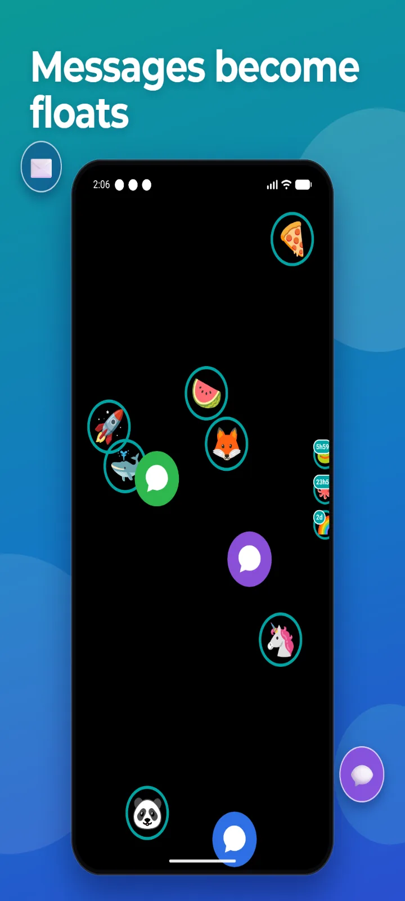

Messages become floats
- What
- The chat messages from the apps you choose appear as small floating bubbles on top of everything else.
- Why
- You see them without opening the notification shade, and they stay until you decide what to do.
- Example
- A friend asks "Are you coming tonight?" while you are in the middle of a map. The float waits over the map until you have a moment.
